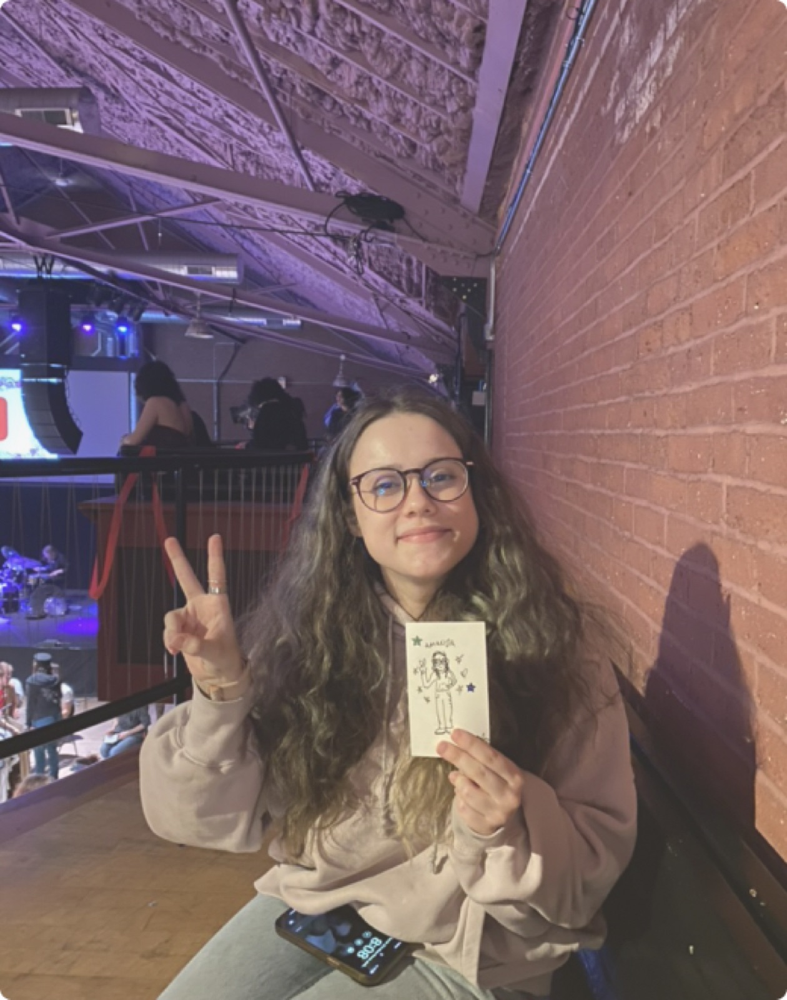

About
I'm a Communication Design student at MassArt, with a minor in the Business of Creative Industries. I split my time between Boston and Laconia, New Hampshire.
I love taking a project from first sketch to the finished, printed thing. Over two summers at Gator Graphix I designed boat graphics, signs and banners, working one on one with clients to get every detail right.
Skills & tools